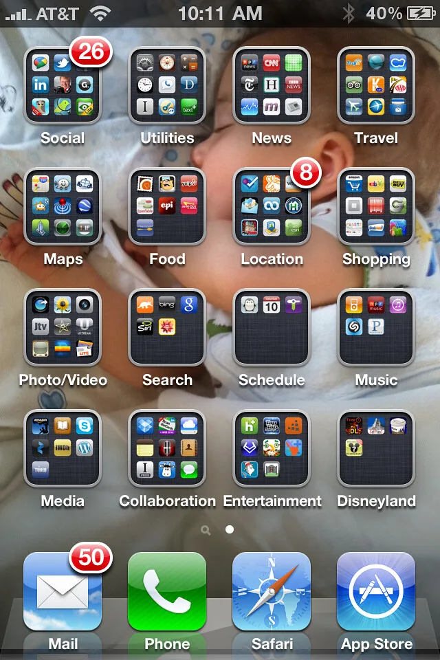

네이버 "에이전트 빠르게"·카카오 "카톡에 집중"…AI 올인 네카오의 다른 길
국내 양대 플랫폼 기업인 네이버와 카카오가 인공지능(AI) 서비스를 둘러싸고 서로 다른 전략을 택하면서 뚜렷한 대조를 이루고 있다. 두 회사 모두 AI를 핵심 성장축으로 삼고 있다는 점은 같지만, 이용자를 빠르게 확보하기 위한 독립 서비스 확장에 나선 네이버와, 기존 메신저 하나에 역량을 모으는 카카오의 접근 방식은 정반대 방향을 가리키고 있다는 평가가 나온다.
네이버는 대화형 검색 서비스인 'AI탭'을 통해 독자적인 AI 서비스 영역을 빠르게 넓혀가고 있다. 네이버는 17일 AI탭의 누적 이용자 수가 1000만 명을 넘어섰다고 밝혔다. 기존 검색창과 별도로 대화형 인터페이스를 제공하는 이 서비스는 출시 이후 꾸준히 이용자를 늘려왔으며, 네이버는 이를 기반으로 광고 등 수익화 모델도 함께 확대해 나가겠다는 구상을 밝힌 바 있다. 독립된 AI 서비스를 통해 이용자 경험을 넓히고, 이를 다시 검색과 커머스 등 기존 사업과 연결하는 것이 네이버의 전략으로 풀이된다.
반면 카카오는 정반대 방향을 택했다. 카카오는 독자적인 대화형 AI 애플리케이션인 '카나나'의 PC·앱 서비스를 지난 15일을 끝으로 종료했다. 지난해 5월 베타 서비스로 선보인 지 약 1년 5개월 만의 종료다. 카카오는 "국내외 AI 시장이 그 어느 때보다 빠르고 다양하게 변화하고 있다"며 "이용자들에게 더 깊이 있는 AI 경험을 제공하기 위한 다음 단계로 나아가고자 서비스를 종료한다"고 설명했다. 그간 투 트랙으로 운영해 온 AI 대화 서비스를 하나로 통합해, 국민 메신저인 카카오톡 안에서 AI 기능을 고도화하고 비용을 절감하려는 포석으로 해석된다.
카카오는 서비스 종료에 앞서 이용자들이 혼란을 겪지 않도록 사전 안내에 나섰다. 이용자는 지난 14일까지 PC에서 카나나 대화 데이터를 백업할 수 있었고, AI 스튜디오에서 만든 이미지는 보관함에서 개별적으로 내려받아야 했다. 카카오는 앞으로 지난 3월 정식 출시된 '카나나 인 카카오톡'을 비롯해 '챗지피티 포 카카오', '플레이MCP(PlayMCP)' 등을 통해 카카오톡 중심의 AI 기술 상용화를 이어가겠다는 방침이다. 별도 앱 운영에 따른 중복 투자를 줄이고, 이미 수천만 명이 쓰는 카카오톡의 이용자 기반을 그대로 AI 서비스로 확장하겠다는 계산이 깔려 있다.

업계에서는 두 회사의 전략 차이를 두고 평가가 엇갈린다. 네이버처럼 독립 서비스를 키우는 쪽은 이용자를 빠르게 끌어모을 수 있지만 별도의 마케팅과 운영 비용이 꾸준히 들어간다는 부담이 있다. 반대로 카카오처럼 기존 메신저에 집중하는 쪽은 비용 효율은 높지만, 새로운 AI 경험 자체를 내세워 이용자를 늘리는 데는 상대적으로 한계가 있을 수 있다는 지적이 나온다. 결국 어느 쪽이 더 많은 이용자의 일상적 AI 사용 습관을 선점하느냐가 두 회사의 중장기 경쟁력을 가를 것으로 보인다.
국내 양대 플랫폼이 서로 다른 길을 택한 가운데, 글로벌 빅테크들의 AI 에이전트 경쟁도 한층 치열해지고 있어 네이버와 카카오 모두 전략의 성과를 조기에 입증해야 하는 압박을 받고 있다. 업계는 두 회사가 각자 택한 전략이 실제 매출과 이용자 지표로 이어지는지를 다음 실적 발표에서 확인할 수 있을 것으로 보고 있다.